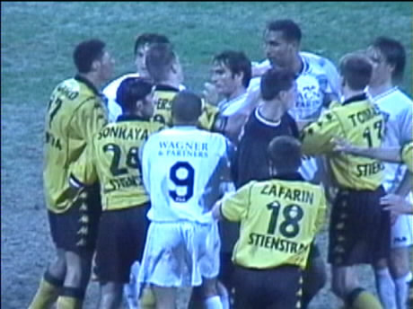
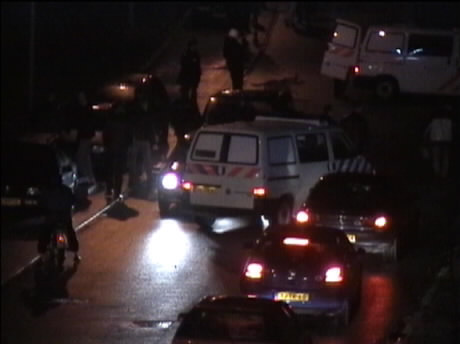

|
Roda JC - NAC 1-0 (9 maart 2001) |
Hier zien we reeds wie de nieuwe sponsor wordt.
De NAC spelersbus.
De NAC-supporters (enkele honderden) hebben een mooi
spandoek voor
Arno Doomernik meegenomen.
Foto: Julien Erens
Vrije trap van Anastasiou op de lat. (kijk goed, je ziet het).
Roda heeft steeds meer supporters uit
Midden-Limburg. Hier
een koempelinnetje uit
Herten, vlakbij Roermond.
Ioannis scoort 1-0. Vreugde!
Meteen wordt er gevlagd op WEST.
Simons, invaller, krijgt al na een minuut of 5, rood!
Van der Luer speelde vanavond niet bijster goed en wordt
hier
vervangen door Vandenbroucke. Torma was er al eerder
ingekomen
voor Soetaers.

Pallaver in de hectische eindfase.
Foto: Julien Erens
Deze Roda-supporters lijken niet gerust op een goede afloop.
Bedanktje aan Zuid.
Foto: Julien Erens

En aan West.
Foto: Julien Erens

Buiten waren er nog wat opstootjes.
©KPD